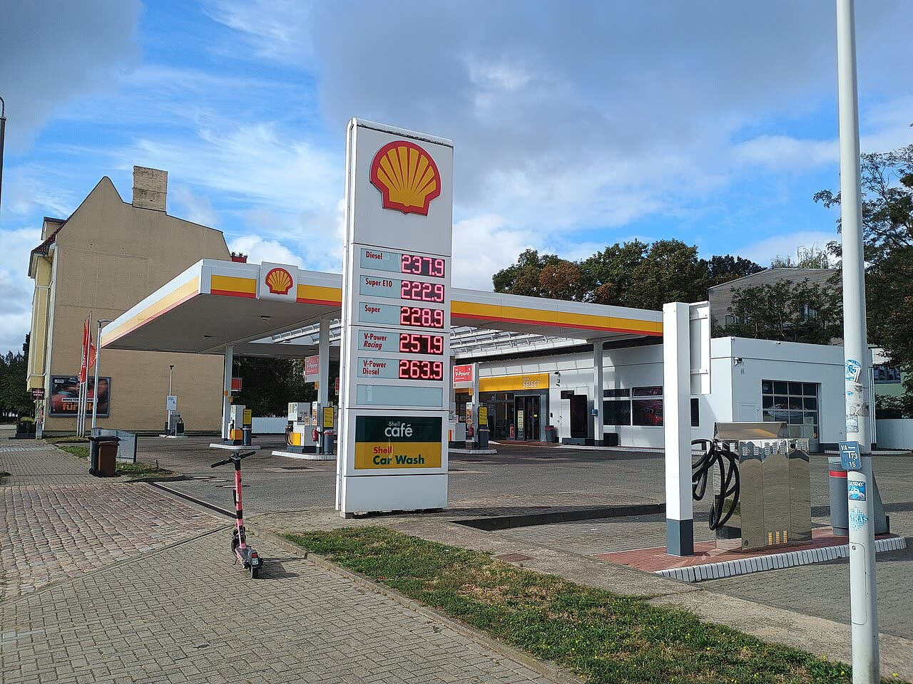

Germania, inflazione giù al 2,8% con lo sconto sul carburante
Lo sconto tedesco sul pieno funziona, ma vale tre decimi e scade a dicembre. Da noi i prezzi li spingono le bollette: il gettito IVA che l'inflazione porta allo Stato va restituito in modo stabile, non a pezzi di dieci giorni.
Redazione Contrappunto · aggiornato il 31.10.2026


Da fine febbraio la guerra tra Stati Uniti e Iran tiene alti i prezzi dell'energia in tutta Europa. Il 30 ottobre i quattro grandi paesi dell'euro hanno pubblicato le stime dell'inflazione di ottobre, cioè di quanto sono saliti i prezzi rispetto a un anno prima: Italia 5,4%, Spagna 4,9%, Francia 3,4%, Germania 2,8%. La Germania è l'unica in calo. Dal 1° ottobre al 31 dicembre il governo tedesco ha abbassato di circa 14 centesimi al litro la tassa su benzina e gasolio: con l'IVA, fino a 17 centesimi in meno alla pompa. In Italia il governo ha tagliato l'accisa sul gasolio di 4,9 centesimi, dal 28 ottobre al 7 novembre.
Vedi di più: 4 parole spiegate, cosa si racconta
Cosa si raccontaIn Germania FAZ e Spiegel titolano sullo sconto che abbassa l'inflazione, e riportano economisti e Bundesbank che non vedono una svolta: l'energia resta cara e a gennaio, quando lo sconto finisce, i prezzi possono risalire. Euronews mette in fila i quattro paesi e chiede perché lo stesso rincaro dell'energia dia conti così diversi. Nei titoli italiani del 30 ottobre c'era il 5,4% di casa nostra, senza il confronto con Berlino. [Frankfurter Allgemeine Zeitung] [Der Spiegel] [Euronews]
- Tankrabatt
- Lo «sconto sul pieno» tedesco: un taglio temporaneo della tassa sull'energia che pesa su benzina e gasolio. Il governo tedesco lo aveva già usato quest'anno e lo ha rimesso da ottobre a dicembre 2026.
- Destatis e Istat
- Gli istituti nazionali di statistica di Germania e Italia. A fine mese pubblicano una prima stima dei prezzi, poi quella definitiva (per la Germania l'11 novembre).
- Indice armonizzato (IPCA)
- Ogni paese calcola l'inflazione a modo suo; l'indice armonizzato usa regole comuni in tutta l'UE e serve a confrontare i paesi. A ottobre: Germania 2,8%, Italia 5,6%.
- Energia regolamentata
- Nell'indice Istat sono le tariffe di luce e gas che non si formano liberamente sul mercato, cioè le bollette a prezzo regolato.
- A ottobre l'inflazione in Germania è scesa al 2,8%, dal 3,3% di settembre, secondo la stima provvisoria dell'istituto di statistica tedesco. Ha pesato lo sconto sulle tasse dei carburanti in vigore dal 1° ottobre.
- In Italia, nello stesso mese, l'inflazione è salita al 5,4%, spinta soprattutto dall'energia (Istat).
FAZ e Spiegel lo dicono chiaro: l'inflazione tedesca scende anche per lo sconto sul pieno, ma gli economisti citati gli danno tre decimi e vedono i prezzi di nuovo sopra il 3% a inizio anno. Euronews ha fatto il confronto che da noi è mancato. Il confronto dice una cosa scomoda: il divario con l'Italia non nasce alla pompa, nasce in bolletta, con l'energia regolata su del 59,5% in un anno. Lo sconto tedesco prova che le tasse sull'energia pesano sui prezzi. Ma è a tempo, come i nostri 4,9 centesimi di accise in meno sul gasolio. L'inflazione è una tassa mai votata: il gettito IVA in più che porta allo Stato va restituito, per intero e in modo stabile. [3] [4] [5] [2] [6]
La verifica punto per punto5 passaggi, 6 fonti
Qui sotto ogni cosa scritta sopra, una per una, con le fonti. Confermato: lo dice un documento originale o più fonti lette. Plausibile: lo riportano fonti serie, ma non abbiamo letto l'originale. Discordante: le fonti danno numeri diversi, e diciamo quali. Ipotesi e Opinione sono il nostro ragionamento, separato dai fatti.
Il dato tedesco
Per Destatis i prezzi in Germania a ottobre sono saliti del 2,8% in un anno (3,3% a settembre) e sono calati dello 0,2% sul mese; anche l'indice armonizzato è al 2,8%. L'energia è salita del 12,2%, contro il 14,9% di settembre; l'inflazione di fondo, senza cibo ed energia, è al 2,1%. Il dato definitivo esce l'11 novembre.
Quanto vale lo sconto
Holger Schmieding, capo economista di Berenberg, stima che lo sconto abbia tolto circa 0,3 punti all'inflazione di ottobre (FAZ). Jörg Krämer, di Commerzbank, prevede che a cavallo dell'anno l'inflazione torni sopra il 3%; per la Bundesbank l'energia resterà molto cara nonostante lo sconto (Spiegel). Lo Spiegel ricorda che il governo lo ha reintrodotto nonostante molte critiche degli economisti.
E in Italia
Per l'Istat a ottobre i prezzi sono saliti del 5,4% (4,2% a settembre), 5,6% sull'indice armonizzato. L'energia è salita del 31,4%: quella regolamentata del 59,5%, quella libera del 29,4%. Il taglio di 4,9 centesimi delle accise sul gasolio, dal 28 ottobre al 7 novembre, è pagato con 38,7 milioni di gettito IVA in più di settembre (Domani).
Da dove viene il divario
Lo sconto tedesco spiega una parte del calo di ottobre, non la distanza dall'Italia: quella viene soprattutto dalle bollette.
Ragionamento: Sull'indice armonizzato, che si può confrontare, la distanza è di 2,8 punti (2,8% contro 5,6%); la stima di Berenberg sullo sconto vale 0,3 punti. In Italia la voce che corre di più è l'energia regolamentata (+59,5%), cioè le tariffe di luce e gas, non i carburanti. I due indici nazionali pesano l'energia in modo diverso, quindi il confronto voce per voce è indicativo.
Il nostro punto
Abbassare le tasse sull'energia funziona, e i tedeschi lo dimostrano. Ma uno sconto a tempo è una toppa: l'IVA in più che l'inflazione fa entrare nelle casse pubbliche va restituita per intero e in modo stabile, a partire dalle bollette.
Fonti6, tutte con il link
- Inflationsrate im Oktober 2026 voraussichtlich +2,8 % (comunicato n. 382 del 30 ottobre 2026) (Statistisches Bundesamt (Destatis)) · consultata il 31.10.2026
- Prezzi al consumo (dati provvisori), ottobre 2026 (Istat) · consultata il 31.10.2026
- Inflation in Deutschland sinkt auf 2,8 Prozent: Tankrabatt als Faktor (Frankfurter Allgemeine Zeitung) · consultata il 31.10.2026
- Verbraucherpreise für Güter und Dienstleistungen: Tankrabatt dämpft Inflation (Der Spiegel) · consultata il 31.10.2026
- Germany, France, Italy and Spain: Where was inflation highest in October? (Euronews) · consultata il 31.10.2026
- Carburanti, il governo taglia le accise al gasolio di 4,9 centesimi fino al 7 novembre (Domani) · consultata il 31.10.2026
Testo preparato con strumenti di intelligenza artificiale e pubblicato senza revisione umana. Come lavoriamo